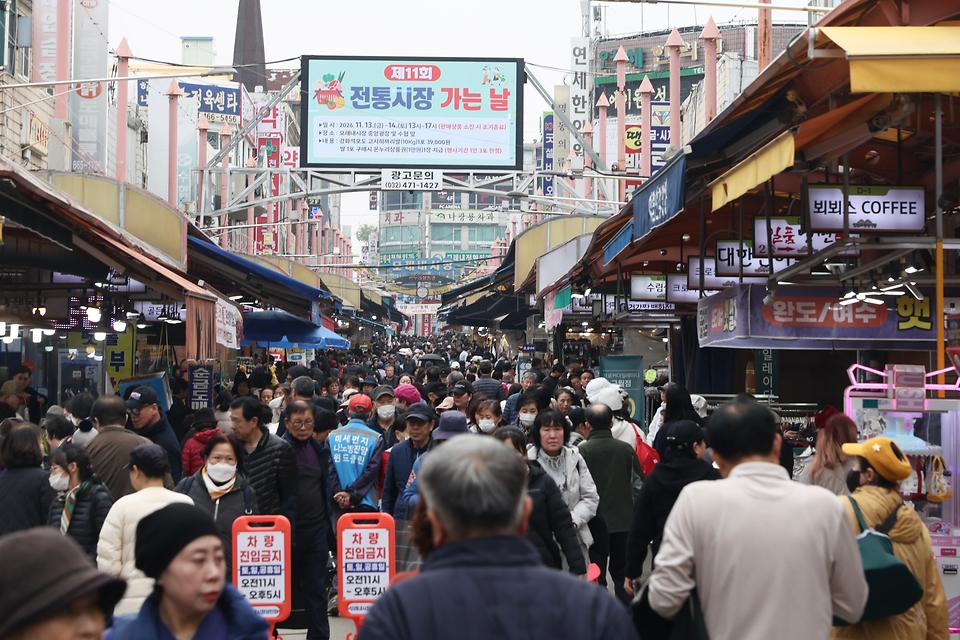
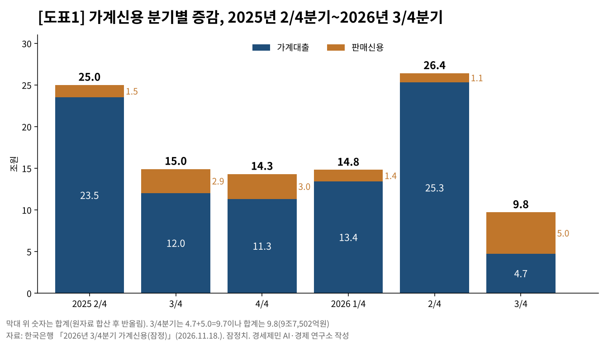
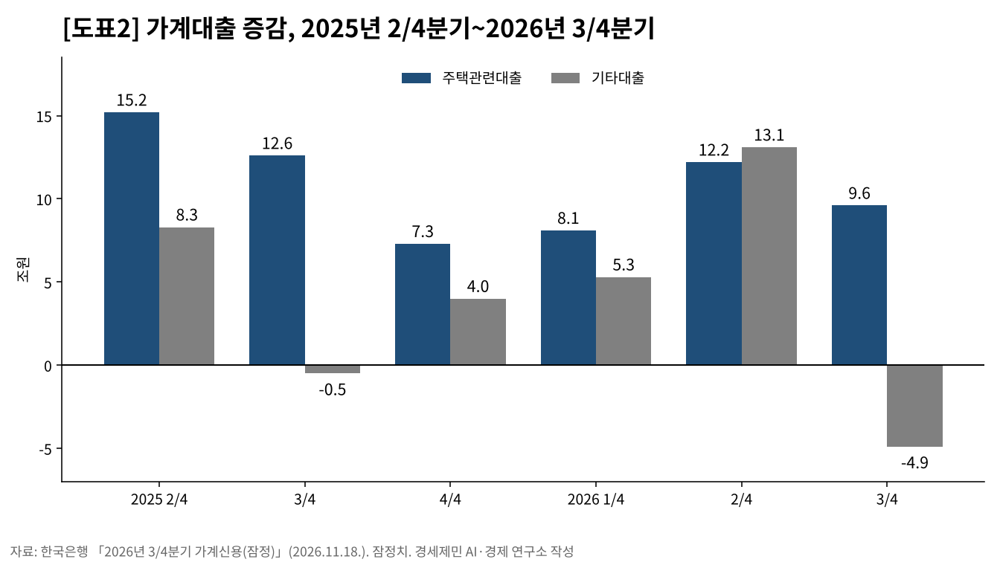
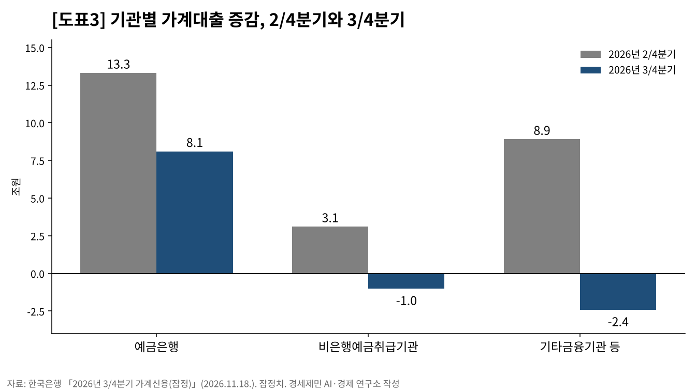
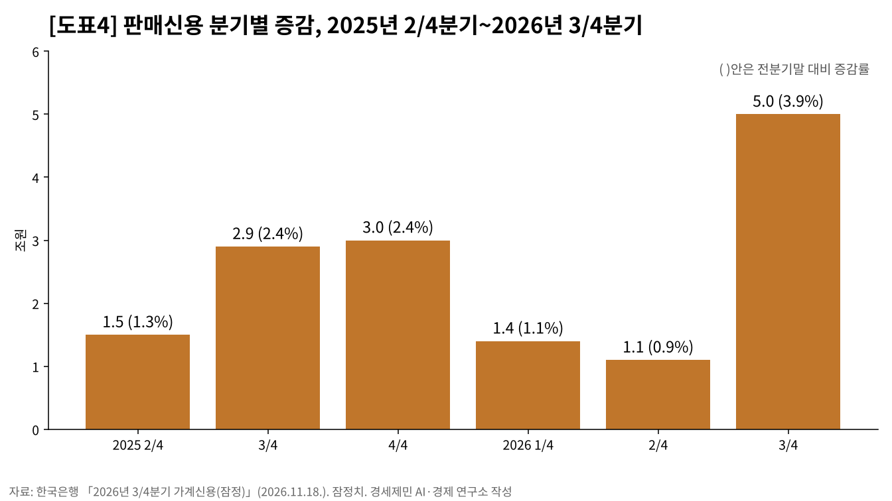
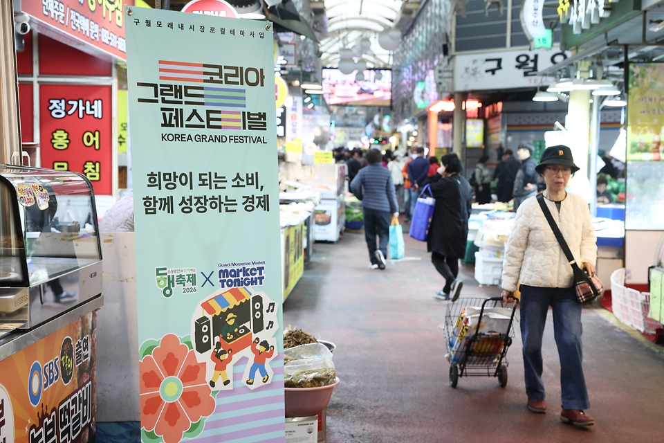

[가계부채 브리핑③] 3분기 가계신용 9.8조원 증가, 증가분 절반 넘게 판매신용
가계신용 잔액 2,030.5조원, 증가액은 2분기의 37%
가계대출 4.7조원 증가, 주택관련대출 9.6조원 증가
기타대출 4.9조원 감소, 판매신용 5.0조원 증가

요약
3분기 가계신용(가계대출과 판매신용의 합)은 9.8조원 늘었다. 그 가운데 5.0조원, 51.5%는 대출이 아니라 판매신용이다(경세제민 AI·경제 연구소 계산). 가계대출 증가액은 4.7조원으로 2분기 25.3조원의 5분의 1에 못 미친다.
한국은행이 11월 18일 낸 「2026년 3/4분기 가계신용(잠정)」을 보면 3분기 말 가계신용 잔액은 2,030.5조원이다. 증가액 9.8조원은 2분기 증가액 26.4조원의 37%다(경세제민 AI·경제 연구소 계산).
대출 안에서는 주택관련대출이 9.6조원 늘고 기타대출이 4.9조원 줄었다. 주택관련대출은 가계대출 잔액의 63.4%다(경세제민 AI·경제 연구소 계산). 가계대출 증가 4.7조원은 두 흐름이 맞선 순증가다.
경세제민 AI·경제 연구소은 금융위원회와 금융감독원에 여신전문회사 판매신용의 일시불·할부 구성 공개를 검토하기를 요청하고, 한국은행에는 12월 지역별 소급 수정 때 경기 서부 시군 구분이 가능한지 확인해 공표하기를 제안한다. 4분기 가계신용이 나오면 이 브리핑의 여섯 분기 표를 이어서 다시 센다.
배경과 목적
경세제민 AI·경제 연구소은 11월 12일 가계부채 브리핑에서 3분기 가계신용이 아직 나오지 않았다고 적었다. 한국은행이 11월 18일 3분기분을 냈다. 이 브리핑은 그 뒤를 이어 빚의 크기를 다시 센다.
물음은 넷이다. 첫째, 3분기 가계신용은 얼마나 늘었나. 둘째, 증가폭이 줄어든 자리는 어느 대출이고 어느 금융기관인가. 셋째, 외상과 할부를 뜻하는 판매신용은 어떻게 움직였나. 넷째, 인천과 경기 서부 수치를 가를 자료가 있는가.
자료와 방법
자료는 한국은행이 2026년 11월 18일 낸 「2026년 3/4분기 가계신용(잠정)」(공보 2026-11-17호) 본문과 붙임 통계표 전체다. 문의처는 경제통계1국 금융통계부 금융통계팀이다. 기준은 2026년 3/4분기 말이고, 2025년 이후 수치는 잠정치다.
한국은행은 기초자료가 보완되거나 편제기준이 바뀌면 잠정치가 수정된다고 밝혔다. 한국은행은 이번 판에서 통화통계 개편에 맞춰 기타금융기관 안의 업권 분류를 조정했다.
또 한국은행은 비은행예금취급기관의 가계대출 기초자료를 정비하면서 2016년 6월부터 가계신용(분기)과 예금취급기관 가계대출(월) 시계열을 일부 소급 수정했다. 이 글의 과거 분기 수치는 모두 이번 판 값이다.
이번 판의 2분기 말 가계신용 잔액은 2,020.8조원이다. 8월 19일 판은 잔액을 2,019.8조원, 전분기 말 대비 증가액을 25.9조원으로 적었다. 이번 판 값이 잔액은 1.0조원, 증가액은 0.5조원 많다(경세제민 AI·경제 연구소 계산).
한국은행은 가계대출 잔액을 1,891.3조원에서 1,892.1조원으로, 증가액을 24.9조원에서 25.3조원으로 고쳤다. 판매신용은 잔액을 128.5조원에서 128.7조원으로, 증가액을 0.9조원에서 1.1조원으로 고쳤다.
증감액은 한국은행이 쓴 기간 중 말잔 증감이다. 비율은 십억원 단위 원자료로 경세제민 AI·경제 연구소이 다시 셌다. 주택관련대출은 개별주택담보대출, 전세자금대출, 집단대출의 합이며, 한국은행 표에 주택담보대출만 따로 뗀 항목은 없다.
보조 자료는 둘이다. 인천 수치는 한국은행 인천본부 자료를, 월별 흐름은 금융위원회 자료를 썼다.
결과
가계신용 9.8조원 증가
3분기 말 가계신용 잔액은 2,030.5조원이다. 전분기 말보다 9.8조원(0.5%), 1년 전보다 65.2조원(3.3%) 늘었다. 2025년 2분기부터 2026년 3분기까지 여섯 분기 가운데 증가액이 가장 작다(도표1). 2분기 증가액은 26.4조원이었다.

가계대출 4.7조원 증가와 주택관련대출 몫
가계대출 잔액은 1,896.8조원이다. 전분기 말보다 4.7조원(0.3%), 1년 전보다 54.7조원(3.0%) 늘었다. 증가액은 2분기 25.3조원에서 크게 줄어 여섯 분기 가운데 가장 작다.
주택관련대출은 9.6조원 늘어 잔액이 1,202.3조원이다. 가계대출 잔액의 63.4%다(경세제민 AI·경제 연구소 계산). 기타대출은 4.9조원 줄어 잔액이 694.5조원이다. 2025년 3분기에 0.5조원 줄었던 때보다 감소 폭이 크다(도표2).

한국은행은 기관별로 이렇게 설명했다(도표3). 예금은행 가계대출은 주택관련대출 증가폭이 커졌으나 기타대출이 감소로 돌아서면서 증가폭이 13.3조원에서 8.1조원으로 줄었다.

비은행예금취급기관 가계대출은 주택관련대출 증가 규모가 줄고 기타대출 감소 폭이 커지면서 3.1조원 증가에서 1.0조원 감소로 돌아섰다. 기타금융기관 등의 가계대출은 주택관련대출과 기타대출이 모두 감소로 돌아서면서 8.9조원 증가에서 2.4조원 감소로 바뀌었다.
예금은행의 주택관련대출은 2분기 6.8조원에서 3분기 9.0조원으로 증가폭이 커졌다. 비은행예금취급기관은 주택관련대출이 0.8조원 늘고 기타대출이 1.8조원 줄었다.
기타금융기관 등은 주택관련대출이 0.2조원, 기타대출이 2.2조원 줄었다. 업권별 가계대출은 상호금융이 1.5조원, 새마을금고가 0.4조원 줄고 신용협동조합이 0.5조원, 상호저축은행이 0.4조원 늘었다.
판매신용 5.0조원 증가
판매신용 잔액은 133.7조원이다. 전분기 말보다 5.0조원(3.9%), 1년 전보다 10.5조원(8.5%) 늘었다. 증가액은 2분기 1.1조원에서 3분기 5.0조원으로 커졌다.
한국은행은 여신전문회사를 중심으로 증가했다고 밝혔다. 여신전문회사 판매신용은 5.0조원 늘어 잔액이 132.3조원이다. 백화점과 자동차회사 같은 판매회사 판매신용은 11억원 늘어 사실상 변동이 없고 잔액이 1.4조원이다(도표4).

판매신용 증가액 5.0조원은 가계대출 증가액 4.7조원보다 크다. 증가액이 2분기 1.1조원에서 5.0조원으로 뛴 원인은 이 자료로 가릴 수 없다. 가계신용 증가분 9.8조원에서 판매신용이 차지한 몫은 51.5%다(경세제민 AI·경제 연구소 계산).
인천 월별 참고
한국은행 3분기 가계신용 자료에는 인천이나 경기 서부 같은 권역 수치가 없다. 한국은행 인천본부는 2026년 11월 27일 「2026년 3분기중 인천지역 금융기관 여수신 동향」(인천 2026-57호)을 냈다.
인천 가계대출은 7월 1,496억원 줄고 8월 3,502억원 늘었으며 9월 2,273억원 줄었다. 3분기 합계는 267억원 감소로 거의 제자리다(7·8·9월 합계는 경세제민 AI·경제 연구소 계산). 9월 말 잔액은 75조7,290억원이다.

인천본부 자료는 인천 소재 금융기관의 가계대출이고, 전국 가계신용에는 판매신용이 들어 있다. 두 자료의 범위가 달라 가계신용 분기 증감과 직접 견주지 않는다.
금융위원회 월별 흐름
금융위원회는 11월 12일 「2026년 10월 가계대출 동향(잠정)」을 냈다. 전 금융권 가계대출은 7월 6.4조원, 8월 2.8조원 늘고 9월 2.2조원 줄었다. 10월은 6.4조원 늘었다(잠정).
3분기 세 달 합 7.0조원은 한국은행 4.7조원과 다르다. 2분기 4~6월 합 21.1조원도 25.3조원과 다르다(경세제민 AI·경제 연구소 계산). 두 값은 대상 기관과 집계 방식이 같은지 알 수 없어 직접 견주지 않는다.
해석(경세제민 AI·경제 연구소 판단)
3분기 증가폭 축소는 모든 대출의 증가폭이 고르게 줄어든 결과가 아니다. 대출 안에서 주택관련대출은 9.6조원 늘었고 기타대출은 4.9조원 줄었다. 가계대출 순증가 4.7조원은 이 두 흐름이 맞선 값이다.
기관별로도 갈린다. 예금은행의 주택관련대출만 증가폭이 커졌고, 비은행예금취급기관과 기타금융기관 등의 가계대출은 줄었다. 한국은행 표에 주택담보대출만 따로 뗀 항목이 없어 늘어난 돈이 어느 지역으로 갔는지 가릴 수 없다.
전국 둔화가 인천과 경기 서부에도 나타났는지는 권역 수치가 없어 가리지 못한다. 한 분기 값으로 추세가 바뀌었다고 말하기도 어렵다.
가계대출 증가액은 2분기보다 20.6조원 줄었다. 이 가운데 18.0조원은 기타대출(13.1조원 증가에서 4.9조원 감소로), 2.6조원은 주택관련대출(12.2조원에서 9.6조원으로) 몫이다(경세제민 AI·경제 연구소 계산).
가계대출 증가액은 2025년 3분기 12.0조원, 4분기 11.3조원, 2026년 1분기 13.4조원이다. 2분기에 25.3조원으로 뛴 뒤 3분기에 4.7조원으로 내려왔다.
2025년에도 가계대출 증가액은 2분기 23.5조원에서 3분기 12.0조원으로 줄었다. 2026년 3분기 4.7조원은 2025년 3분기 12.0조원, 2024년 3분기 16.9조원보다 작다(경세제민 AI·경제 연구소 계산).
금융위 10월 증가는 집계 범위가 같은지 확인하지 못해 방향 참고에 그치며, 둔화 여부는 한국은행 4분기 값으로 판단한다.
판매신용은 가계대출 통계에 들지 않는다. 가계대출만 보면 3분기 증가는 4.7조원이고, 가계신용으로 보면 9.8조원이다. 4.7조원과 5.0조원을 더하면 9.7조원으로 보이나, 원자료로는 합이 9조7,502억원이어서 9.8조원이다(경세제민 AI·경제 연구소 계산).
판매신용은 대출과 성격이 다르다는 반론이 가능하다. 그래도 한국은행 정의에 따라 가계신용에 들므로, 경세제민 AI·경제 연구소은 가계대출 4.7조원과 가계신용 9.8조원을 함께 제시한다. 한국은행이 잠정치와 소급 수정을 밝혔으므로 이 수치는 바뀔 수 있다.
제언(경세제민 AI·경제 연구소 판단)
금융위원회·금융감독원 — 여신전문회사 판매신용의 일시불·할부 구성 공개
판매신용 증가액은 2분기 1.1조원에서 3분기 5.0조원으로 커져 가계신용 증가분의 절반을 넘었다. 한국은행 자료로는 그 원인을 가릴 수 없다. 경세제민 AI·경제 연구소은 금융위원회와 금융감독원에 여신전문회사 판매신용의 일시불·할부 구성과 증가 업종을 공개할 수 있는지 검토하기를 요청한다.
한국은행 — 지역별 소급 수정 때 경기 서부 시군 표 공표
한국은행은 12월 중 지역별 여수신 소급 수정 자료를 경제통계시스템에 올릴 예정이다. 경세제민 AI·경제 연구소은 이 통계에 경기 서부 시군 구분이 가능한지 확인하고, 가능하면 예금은행과 비은행예금취급기관으로 나눠 공표하기를 제안한다. 인천은 인천본부가 월별로 공표하고 있다. 경세제민 AI·경제 연구소은 인천과 맞닿은 생활권의 빚 흐름을 함께 보려고 경기 서부를 묻는다.
다만 지역별 통계가 시도 단위로만 공표되면 시군 구분은 어렵고, 포괄 범위도 공표 때 확인해야 한다. 보도자료는 비은행예금취급기관 가계대출과 연계된 지역별 여수신 통계라고만 적어, 판매신용과 기타금융기관 등이 들어가는지 알 수 없다.
연구소 — 4분기 재산출(후속 과제)
경세제민 AI·경제 연구소은 한국은행이 4분기 가계신용을 낼 때 이 브리핑의 여섯 분기 표를 이어서 다시 센다. 그때까지 3분기 둔화를 추세 전환으로 읽지 않는다.
참고문헌
- 한국은행 경제통계1국 금융통계부 금융통계팀, 「2026년 3/4분기 가계신용(잠정)」(공보 2026-11-17호), 2026.11.18., https://www.bok.or.kr/portal/bbs/B0000501/view.do?depth=201264&menuNo=201264&nttId=11066748&programType=newsData&relate=Y
- 한국은행 금융통계팀, 「2026년 2/4분기중 가계신용(잠정)」, 2026.8.19.(등록일), https://www.bok.or.kr/portal/bbs/B0000501/view.do?nttId=11063896&oldMenuNo=201150&menuNo=201264&programType=newsData&depth=201264&relate=Y
- 한국은행 인천본부, 「2026년 3분기중 인천지역 금융기관 여수신 동향」(인천 2026-57호), 2026.11.27., https://www.bok.or.kr/portal/bbs/P0000720/view.do?menuNo=200570&nttId=11067146
- 금융위원회 금융정책과, 「2026년 10월 가계대출 동향(잠정)」, 2026.11.12., https://www.fsc.go.kr/po010101/88124
- 경세제민 AI·경제 연구소, 「[가계부채] 다시 늘어난 빚 6조4000억원과 0.61%포인트 오른 대출 이자」, 2026.11.12., https://weminai.com/report/hdb01.html
도표 출처
- [도표1]~[도표4] 한국은행 「2026년 3/4분기 가계신용(잠정)」 통계표(경세제민 AI·경제 연구소 계산), 경세제민 AI·경제 연구소 작성
사진 출처
- [사진1·2] "코리아 그랜드 페스티벌, 전국적 소비활성화 분위기 확산", 대한민국 정책브리핑(사진출처 문화체육관광부 국민소통실, 촬영 2026.11.13., 촬영장소 인천 구월모래내시장), 2026.11.13., https://www.korea.kr/multi/policyPhotoView.do?bbsKey=74275
© 경세제민 AI·경제 연구소. 인용할 때는 출처를 밝혀 주십시오.